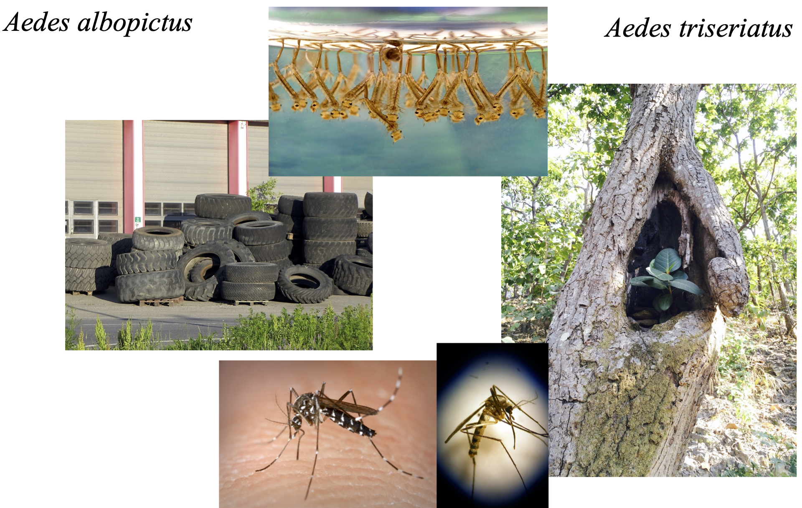

| r | K | alpha or beta | |
|---|---|---|---|
| A. triseriatus (in treehole water) | 0.0514 | 42.8333 | 0.4167 |
| A. albopictus (in treehole water) | 0.0798 | 53.2000 | 0.7333 |
| A. triseriatus (in tire water) | 0.0591 | 32.8333 | 0.8333 |
| A. albopictus (in tire water) | 0.0904 | 45.2000 | 0.2500 |
10 Direct species interactions: understanding mechanisms of invasion in mosquitoes

Species interact with each other. Sometimes those interactions are negative and cause population sizes to decline, and we call that competition. Other times, those interactions are positive and cause population sizes to increase, and we call that mutualism. This chapter explores an example of competition, in which investigators attempted to understand whether a native mosquito, Aedes triseriatus would compete with and inhibit the growth and spread of the Asian tiger mosquito, Aedes albopictus (Figure 10.1) (Livdahl and Willey 1991).
10.1 Goals
In this chapter, you will,
- learn a simple rule determining whether can species coexist,
- do a little theory: extend density to include a second species,
- do a little algebra: solve simultaneously two growth equations to determine coexistence criteria, and
- start to develop a greater understanding and intuition for species interactions.
10.2 Preparatory steps
- The preceding chapter on density-dependent population growth provides important background
- Read Livdahl and Willey (1991) in Perusall through our Canvas site. It is also available in our class archive: Livdahl and Willey (1991)
- If you are curious, check Deliverables, at the end (Section 10.5).
10.2.1 Optional background
If you are interested, you can download slides and watch the video on competition (4b) before proceeding.)
10.3 Background
We don’t often know for sure what determines the establishment and spread of non-native species in a novel environment, but a variety of mechanisms and factors have been shown to play important roles in some situations, includ ing,
- an environment similar to the home environment, or otherwise hospitable,
- presence of mutualists from which a species benefits,
- an absence of enemies that recognize a species,
- the presence of competitors.
Here we investigate the role of competition in potentially inhibiting the spread of the Asian tiger mosquito (Aedes albopictus) outside its native range, in North America (Livdahl and Willey 1991).
Todd Livdahl and Michelle Willey (1991) investigated how intensely Aedes albopictus would compete with the North American species Aedes triseriatus to try to predict whether the native species would inhibit the spread of the non-native species. Generally, mosquitoes lay eggs on water, which hatch into aquatic larvae that feed on particles in the water. These larvae grow and eventually pupate, and then emerge as flying adults, when the males feed on plant nectar and the females obtain a blood meal. During the larval stage, if population densities are high, mosquitoes can compete for food resources and potentially limit their own growth and the growth of competitors. It was this stage during which Livdahl and Willey measure the strength of intraspecific and interspecific competition (Table 10.1).
The version of the two species Lotka-Volterra competition equations we will use are,
\[\frac{dN_1}{dt} = r_1N_1 \left( 1- \frac{N_1 + \alpha N_2}{K_1}\right)\]
\[\frac{dN_2}{dt} = r_2N_2 \left( 1- \frac{N_2 + \beta N_1}{K_2}\right)\]
10.4 Invasion criteria
Rather than just applying the invasion criteria from lecture, let’s derive them. The reasoning is short and the biological insight is large.
10.4.1 Deriving the invasion criterion
Species 2 can invade a population of species 1 if species 2 can grow when rare — that is, when \(N_2 \approx 0\) and species 1 is at its own carrying capacity (\(N_1 = K_1\)).
Substitute these values into the growth equation for species 2:
\[\frac{dN_2}{dt} = r_2 N_2 \left(1 - \frac{N_2 + \beta N_1}{K_2}\right)\]
- Set \(N_2 \approx 0\) and \(N_1 = K_1\), and simplify. What terms drop out? What remains?
- For \(dN_2/dt > 0\) (species 2 is growing), what must be true about \(\beta K_1\) relative to \(K_2\)?
- State the invasion criterion in a complete sentence: “Species 2 can invade a population of species 1 at equilibrium when…”
- Now repeat for species 1 invading a population of species 2 at \(K_2\). Substitute \(N_1 \approx 0\) and \(N_2 = K_2\) into the growth equation for species 1, and derive the condition.
TipFollow the Logic: What the math just told you
The invasion criterion says that a species can invade when it limits itself more than the resident limits it. The math makes this precise: species 2 invades when \(K_2 > \beta K_1\), which means species 2’s own carrying capacity exceeds the impact the resident has on it (scaled by the competition coefficient).
This is a biological insight produced entirely by mathematical reasoning. You started with assumptions (the Lotka-Volterra equations), followed the logic (substitution and an inequality), and arrived at an ecological conclusion (the conditions for coexistence). No new data were needed — just careful thinking about what the model already implies. Mathematical reasoning is a form of ecological understanding: the derivation is one of the ways you come to understand how species coexist.
This is also a skill that protects you from errors. An AI can state the invasion criterion, but if it applies it to the wrong model or flips the inequality, you will only catch the mistake if you can re-derive it yourself.
10.4.2 Apply the criteria
Now use the parameter values in Table 10.1 to evaluate coexistence for both environments (tree hole water and tire water). For each environment:
- Does species 1 (A. triseriatus) satisfy its invasion criterion?
- Does species 2 (A. albopictus) satisfy its invasion criterion?
- What is the predicted outcome — coexistence, competitive exclusion of one species, or competitive exclusion of the other?
10.5 Deliverables
In one document include these two graphs and answers to these questions:
- Draw the isoclines for both species in water obtained from tree holes. Add one curved line for population trajectories starting at 5 A. triseriatus and 5 A. albopictus.
- Draw the isoclines for both species in water obtained from tires. Add one curved line for the population trajectories starting at 5 A. triseriatus and 5 A. albopictus.
- Do the invasion criteria match the figures? Explain.
- Answer the original question for these two environments: will the native A. triseriatus inhibit the establishment of the non-native A. albopictus?